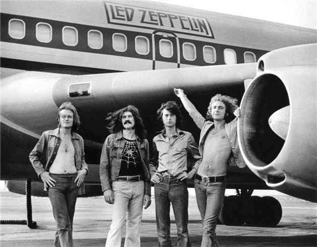

Led Zeppelin
Este famoso grupo britanico se formo a fines de 1968 por el guitarrista Jimmy Page, quien era el ultimo guitarrista de la banda The Yardbirds, y queria formar un nuevo grupo para su nuevo proyecto, que estuvo integrado por John Paul Jones como bajista y teclista, el vocalista Robert Plant y John Bonham en la batería.
Agustin Porta
El nombre de la banda surgió a raíz de un chiste de Keith Moon, baterista de The Who (en una sesión de grabación de una canción de Jeff Beck en el que participaban Jimmy Page, John Paul Jones, John Entwistle y el propio Keith Moon), cuando dijo que la banda fracasaría y caería "como un zeppelin de plomo". El nombre surgió en un principio como Lead Zeppelin (“zeppelin de plomo”), pero a recomendación de Peter Grant, el mánager de la banda, se suprimió la a de lead, para evitar problemas de pronunciación por parte de los hablantes norteamericanos.
FUNDACION
Y COMIENZOS
DE LA BANDA
Page, junto a otros, fueron en busca de un vocalista, quien tenian en mente se nego a hacerlo y quedo como opcion buscar a Robert Plant, este acepto junto a un amigo baterista John Bonham. Poco despues Dreja dejo la musica y entonces estos tres se vieron obligados a buscar un nuevo bajista, John Paul Jones, un amigo de Page que se ofrecio para forman parte del grupo, quedando cerrada la banda.
“Las personas fueron inspiradas por Zeppelin, así que eso es parte del legado de Zeppelin. Esos álbumes de Zeppelin son textos esenciales para cualquier nuevo músico, independientemente del instrumento que toquen”.
James Patrick "Jimmy" Page
“Las personas fueron inspiradas por Zeppelin, así que eso es parte del legado de Zeppelin. Esos álbumes de Zeppelin son textos esenciales para cualquier nuevo músico, independientemente del instrumento que toquen”.
James Patrick "Jimmy" Page
Una vez que la conformacion estuvo terminada, tuvieron una gira por Escandinavia bajo el nombre de The New Yardbirds, en la que tocaron muchas de las canciones que forman parte de su álbum debut.
Su primer disco fue publicado el 12 de enero de 1969, bajo el nombre de Led Zeppelin. Fue grabado en apenas una semana en los estudios Olympic de Londres en octubre de 1968, empleando apenas 30 horas de estudio y sin casi horas de ensayo.
EL ÁLBUM
SIN TÍTULO
El 3er disco fue un disco de rebeldía y protesta hacía las duras críticas recibidas por su anterior trabajo y en él, Page decidió que lo importante debería ser la música y agentes externos a su obra no podían competir con ella, por ello este álbum no debía llevar ni título, ni logo de la discográfica, ni siquiera sus propios nombres, los cuales serían sustituidos por unos extraños símbolos. Según John Paul Jones, bajista de la banda, “Jimmy tuvo la idea de dejar el disco sin título, de utilizar sólo cuatro símbolos. Me enseñó un libro que tenía, The Book of Signs de Rudolph Koch, y me dijo que todos debíamos elegir un símbolo del libro que nos representase. Bonzo y yo así lo hicimos, y no fue hasta bastante más tarde que descubrimos que Jimmy y Robert habían hecho diseñar por su cuenta sus propios símbolos. Realmente típico.”